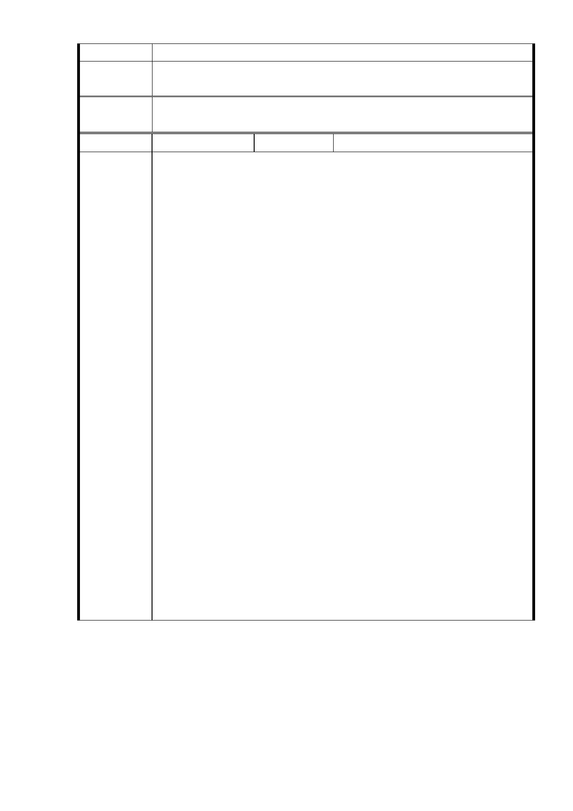

意見
專案小組
審查結論
同編號 1。
委
決
員
會
議
同編號 1。
編號
4
陳情人 葉○鳳
一、反對台北市政府將社福用地容積率從 210 ％調高為 400
%。
理由：
1. 原先廣慈 BOT 開發案時，林口街 80 巷居民因社區住宅
（高 44.85 公尺）及老人長照住宅（高 30.55 公尺）規
劃蓋在我們住宅區的正對面，嚴重影響住宅區日照，附
近居民組織自救會抗議。
2. 我們住在廣慈這裡已 37 年了，廣慈周邊從民國 95 年至
今，因 BOT 委託開發延宕，周邊公共設施服務水準沒
有一絲一毫改變，台北市政府對廣慈周邊的評估竟 180
度大改變，由民國 95 年的「周邊公共設施服務水準不
佳」，變成現況為「道路服務水準、停車需求、公共設
施可負荷」，以此理由將社福用地容積率從 210％調高為
陳情理由
4 00％，居民大家都傻眼。（註一）
3. 在周邊公共設施服務水準不勝負荷的情況下，驟然將社
福用地容積率從 210％暴增為 400 %，增加的人潮、車
輛影響周邊交通環境，不但無法提高本區的生活品質，
反而會陷害廣慈周邊居民掉入痛苦的深淵。
4. 台北市政府對廣慈周邊的評估，是什麼時候評估的？採
用的是什麼評估方法？評估的報告應該公告出來，這種
180 度大改變、自我矛盾的評估到底憑籍的是什麼？210
％調高為 400 %！差很大！台北市政府漠視都市計畫之
願景，嚴重破壞都市均衡發展與居民生活環境，罔顧居
民權益，這簡直是埋下一顆強迫居民抗爭的種子，這樣
顢頇的政策，市民無法接受，一定會抗爭到底。
二、建議台北市政府將公園用地、商業區、社福用地重新規畫，
新設 11 公尺計畫道路往北移，如下圖。
- 31 -